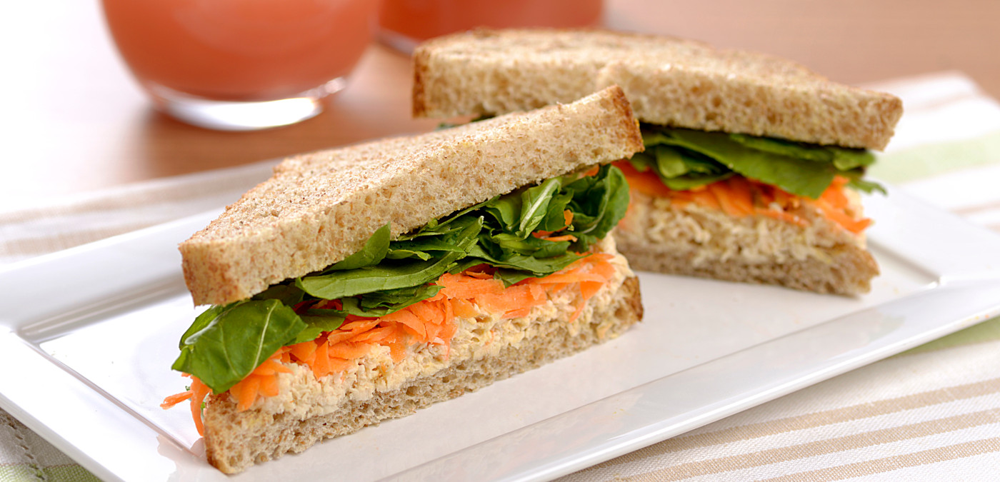

Os lanches são a opção ideal para um quick pick-me-up durante o dia. Aqui você encontrará uma seleção de receitas rápidas e saborosas para satisfazer seu paladar.
O verdadeiro gigante das chapas. Um lanche completo que não economiza no sabor e traz a combinação clássica de carnes, queijo e acompanhamentos que todo mundo ama.
Uma opção prática que agrada a família toda. Perfeito para um lanche da tarde ou para servir quando recebe amigos em casa.

A escolha ideal para quem quer um lanche nutritivo, rápido e muito saboroso. O patê caseiro é o que faz toda a diferença aqui.